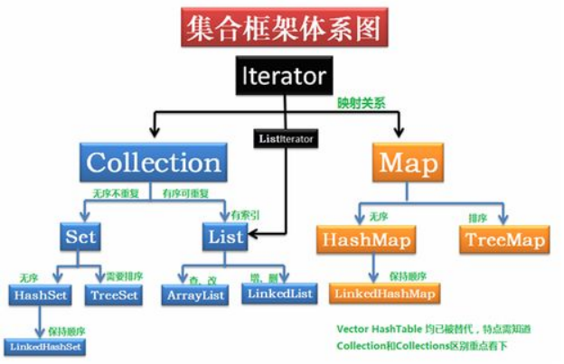

一、Collection、Collections的区别？
1. java.util.Collection是一个集合的顶级接口。它提供了对集合对象进行基本操作的通用接口方法。Collection接口在Java类库中有很多具体的实现，其直接继承接口有List与Set。
2. Collections是集合类的一个工具类，其中提供了一系列静态方法，用于对集合中元素进行排序、搜索以及线程安全等操作。
1）排序（sort）：使用sort方法可以根据元素的自然顺序对指定列表按升序进行排序。列表中的所有元素都必须实现Comparable接口。此列表内的所有元素都必须是使用指定比较器可相互比较的。
1 List<Integer> list = new ArrayList<Integer>();
2 int array[] = {112, 111, 23, 456, 231 };
3 for (int i = 0; i < array.length; i++) {
4 list.add(array[i]);
5 }
6 Collections.sort(list);
7 for (int i = 0; i < array.length; i++) {
8 System.out.println(list.get(i));
9 }
10 结果：23 111 112 231 4562）混排（shuffling）：混排算法所做的正好与sort相反，它打乱在一个List中可能有的任何排列的踪迹。也就是说，基于随机源的输入重排该list，这样的排列具有相同的可能性（假设随机源是公正的）。这个算法在实现一个碰运气的游戏中是非常有用的。例如，它可被用来混派代表一副牌的card对象的一个list。另外，在生成测试案例时，它也是十分有用的。
3）反转（reverse）：使用reverse方法可以根据元素的自然顺序对指定列表按降序进行排序。Collections.reverse(list)
4）替换所有的元素（fill）：使用指定元素替换指定列表中的所有元素。Collections.fill(li,"aaa");
5）拷贝（copy）：用两个参数，一个目标list和一个源list，将源的元素拷贝到目标，并覆盖它的内容。目标list至少与源一样长。如果它更长，则在目标list中的剩余元素不受影响。
Collections.copy(list,li)：前面一个参数是目标列表，后一个是源列表
6）返回Collections中的最小元素（min）：根据指定比较器产生的顺序，返回给定collection的最小元素。collection中的所有元素都必须是通过指定比较器可相互比较的。
Collections.min(list)
7）返回Collections中的最大元素（max）：根据指定比较器产生的顺序，返回给顶collection的最大元素。Collections.max(list)
8）lastIndexOfSubList：返回值定源列表中最后一次出现指定目标列表的起始位置。 int count = Collections.lastIndexOfSubList(list,li);
9）Rotate：根据指定的距离循环移动指定列表中的元素。 Collections.rotate(list,-1); //如果是负数，则正向移动，正数则反向移动。
二、List、Set的区别？
List与Set都继承于Collection，Collection是集合的顶级接口；
List为有序可重复的集合接口，ArrayList、LinkedList、Vector为其实现类；Set是无序不重复的集合接口，HashSet、LinkedHashSet、TreeSet为其实现类。
三、ArrayList、LinkedList、Vector的区别?
ArrayList、Vector：底层均为数组，查询快、增删慢；ArrayList效率高、是线程不安全的；Vector效率低、线程安全，即某一时刻只有一个线程能够写Vector，避免多线程同时写而引起的不一致性。
LinkedList：底层为链表结构，查询慢、增删快；
四、HashMap、HashTable
hashmap的效率高、是线程不安全的，允许键/值为空；
hashtable是线程安全的，效率低，不允许键/值为空；
五、HashSet
哈希表存放的是哈希值。hashset存储元素的顺序并不是按照存入时的顺序（和list显然不同）而是按照哈希值来存的所以取数也是按照哈希值取得。元素的哈希值是通过元素的hashcode方法来获取的，hashset首先判断两个元素的哈希值，如果哈希值一样，接着会比较equals方法，如果equals结果为true，hashset就视为同一个元素。如果equals为false就不是同一个元素。
哈希值相同equals为false的元素是怎么存储呢？就是在同样的哈希值下顺延（可以认为哈希值相同的元素放在一个哈希桶中），也就是哈希一样的存一列。
六、TreeSet
1. treeset是使用二叉树的原理对add的对象按照指定的顺序排序，每增加一个对象都会进行排序，将对象插入到二叉树指定的位置；
2. Integer和String对象都可以进行默认的treeset排序，而自定义的对象是不可以的，自己定义的类必须实现Comparable接口，并且覆盖相应的compareTo()函数，才可以正常使用。
3.在重写compareTo()函数时，要返回相应的值才能使treeset按照一定的规则进行排序。
4.比较此对象与指定对象顺序，如果该对象小于、等于或大与指定对象，则分别返回负整数、零或正整数。
七、TreeMap（可排序）
treeMap实现SortedMap接口，能够把它保存的记录根据键排序，默认是按键值的升序排序，也可以指定排序的比较器，当用iterator遍历treeMap时，得到的记录是排过序的。
如果使用排序的映射，建议使用treeMap。
在使用treeMap时，key必须实现Comparable接口或在构造treeMap传入自定义的Comparator，否则会在运行时抛出java.lang.ClassCastException类型的异常。
八、LinkedHashMap（记录插入顺序)
LinkedHashMap是hashMap的一个子类，保存了记录的插入顺序，在用iterator遍历LinkedHashMap时，先得到的记录肯定是先插入的，也可以在构造函数时带参数，按照访问次序排序。
九、Map接口与Collection接口的区别？
Map是双列的，Collection是单列的；
Map的键值唯一，Collection的子接口set是唯一的；
Map的数据结构只针对键有效，Collection针对元素有效；
| 集合 | 初始容量 | 扩容因子 | 负载因子 | 底层结构 | 线程是否安全 |
| ArrayList | 10 | 1.5 | 无（满了扩容） | 数组 | 否 |
| Vector | 10 | 2 | 无（满了扩容） | 数组 | 是 |
| HashMap | 16 | 2 | 0.75 | 数组+链表+红黑树 | 否 |
| HashSet | 16 | 2 | 0.75 | 数组+链表+红黑树 | 否 |
| HashTable | 11 | 2*1+1 | 0.75 | 数组+链表 | 是 |